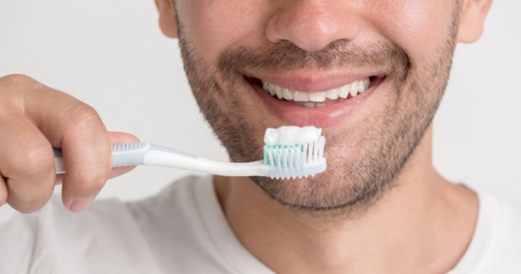

Blog
What Happens When You Don't Regularly Brush Your Teeth

There are some nights when you are too drunk, tired, or lazy that you go to sleep without brushing your teeth. The next day, your oral cavity feels sticky and your morning breath is worse than usual. That's because the remnants of what you ate are still lingering inside your mouth and different kinds of bacteria are feasting on it. For just missing one of the two daily recommended brushings, millions of bad bacteria can grow overnight. If this is how fast bacteria react, imagine what would happen if you missed brushing frequently or you stop brushing for a long time!
- Bad Breath
Halitosis is the most common consequence of not brushing your teeth. The smell of saliva, leftover food and bacteria stay in your mouth giving off bad breath. Though people use mouthwash to eliminate this odor, it doesn't remove or brush away bacteria that lies in your teeth, gums and gaps completely.
- Enamel Decay
If your teeth are not brushed properly and regularly, your enamel (the protective layer of the teeth) will be prone to stains due to sugary and/or acidic food and drinks. When this happens, bacteria will feed off the leftover food and will create dental plaque. The prolonged presence of this plaque will then cause the enamel coating to break down and subject your teeth to faster decay.
- Gingivitis
Further plaque build-up will advance to super-plaque and produce tartar that will irritate the gums. As a result, your immune system will automatically perform its inflammatory response to fight off bacteria. This will then cause the gums to become inflamed and to easily bleed during brushing.
- Periodontitis
Having gingivitis and not brushing your teeth will then put your oral cavity at risk of periodontitis. This disease will make your gum tissues too weak that it can't hold your pearly whites anymore. If ignored, it will also create irreversible damage such as teeth, tissue and bone loss.
- Serious Conditions
According to , consistent poor dental hygiene can ultimately contribute to infections and health conditions such as diabetes, heart disease, temporomandibular (TMJ) disorders, stroke and possibly cancer. This is because your mouth is home to many bacteria that may enter the bloodstream and affect your overall health.